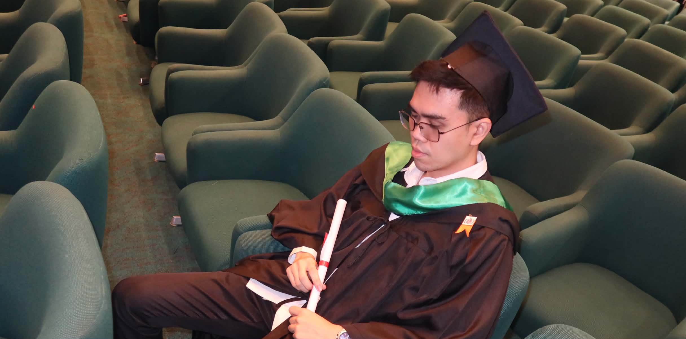
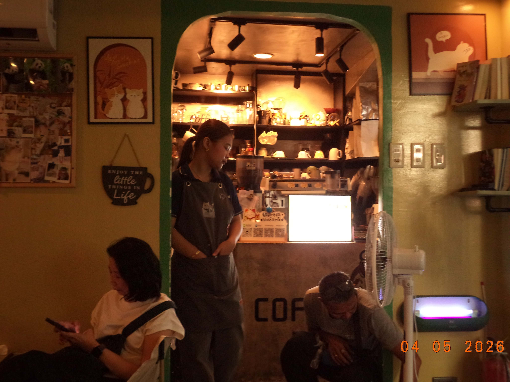
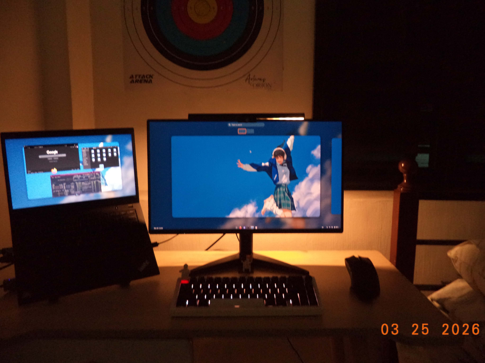
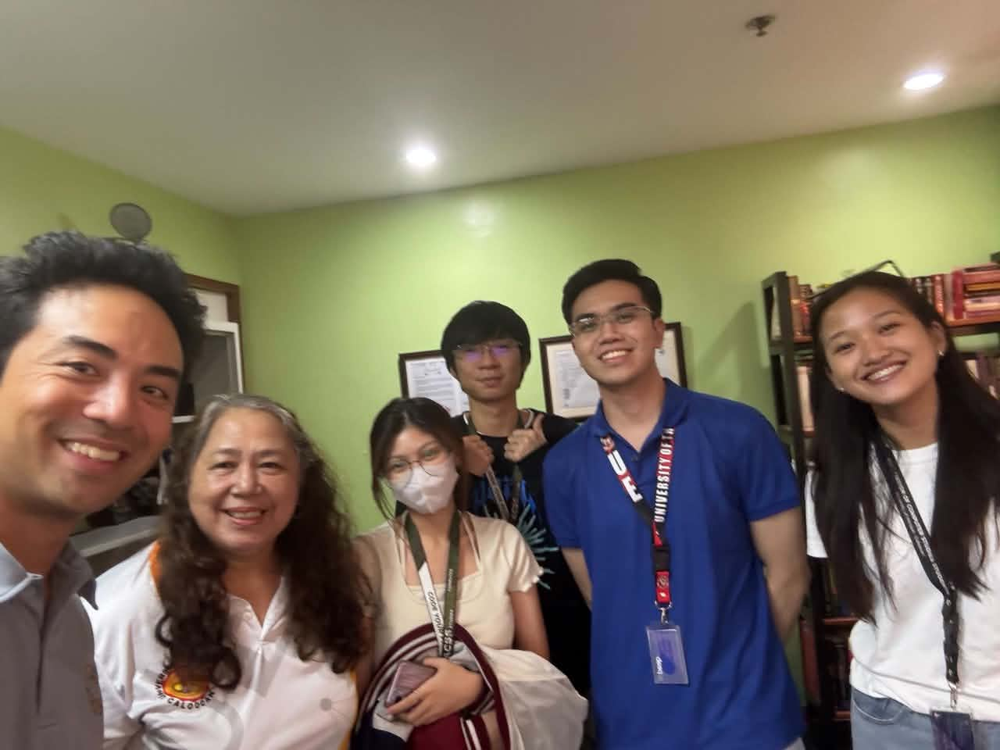
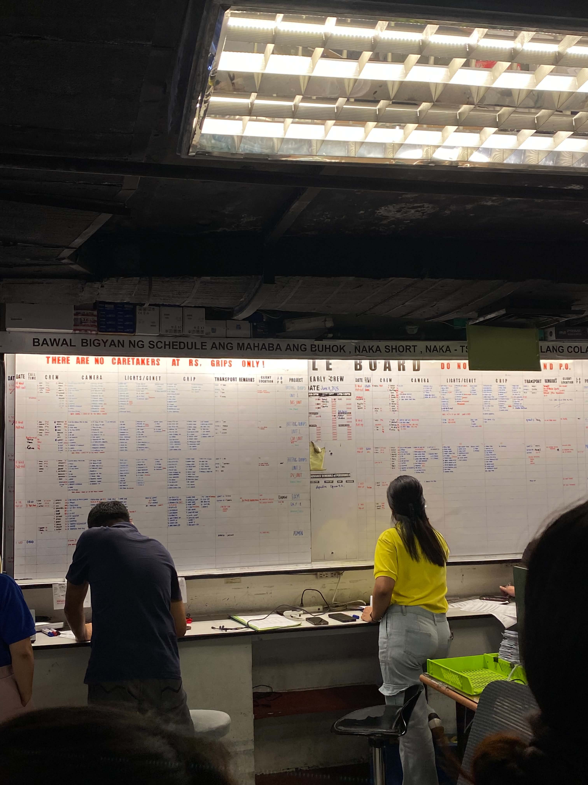
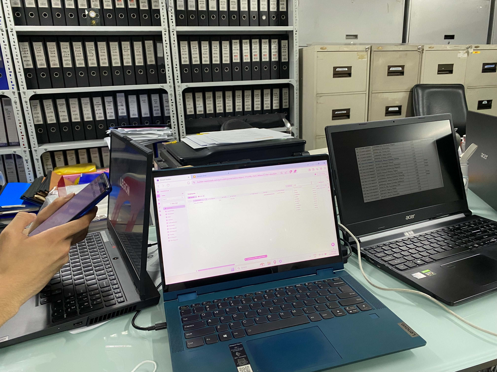

Who I am
Computer Science graduate based in the Philippines.
I'm Renzo, a 24-year-old developer with around 10 months of professional web development experience.



Cloud · Web/Mobile Development · AI · Automation
01
Who I am
I'm Renzo, a 24-year-old developer with around 10 months of professional web development experience.
Leadership
Led a cross-functional team through the KADIMA capstone project, from planning to delivery, earning 1st Place at the Engineering Exhibit 2026.
What I work with
Familiar with SQL, PostgreSQL, Git, GitHub, Python, web development tools, and cloud technologies. Currently expanding my skills in AI and automation.
How I build
I enjoy turning requirements into working systems, thinking through different user scenarios, and making sure features behave correctly.
02



CCLDI · Part-time · Jul 2025 – Mar 2026
Built and maintained a production HR platform used by 138 employees across 16 preschool centers, covering development, testing, troubleshooting, and workflow automation. Delivered attendance with geofencing, leave management, scheduling, role-based access control, audit logging, and automated notifications.
CCLDI · Internship · Jun 2025 – Jul 2025
Contributed to web application development and system improvements, including UI accessibility and workflow redesigns. Joined stakeholder discussions and SDLC activities, and helped build a property management application.
03
A cloud-based notes application built with a serverless AWS architecture. Implemented user authentication, role-based access control, CRUD operations, and a user/notes data model.
An AI-powered recruitment workflow that automates resume intake, file validation, duplicate detection, AI-based candidate evaluation, database storage, and applicant email notifications.
A mobile campus navigation application developed as a capstone project to help users navigate a university environment. Led a cross-functional team through development and delivery, with the project receiving 1st Place at the Engineering Exhibit 2026.
A full-stack task management application built around a REST API and database-backed architecture, with practical experience in containerization, service networking, environment configuration, and multi-container deployment.